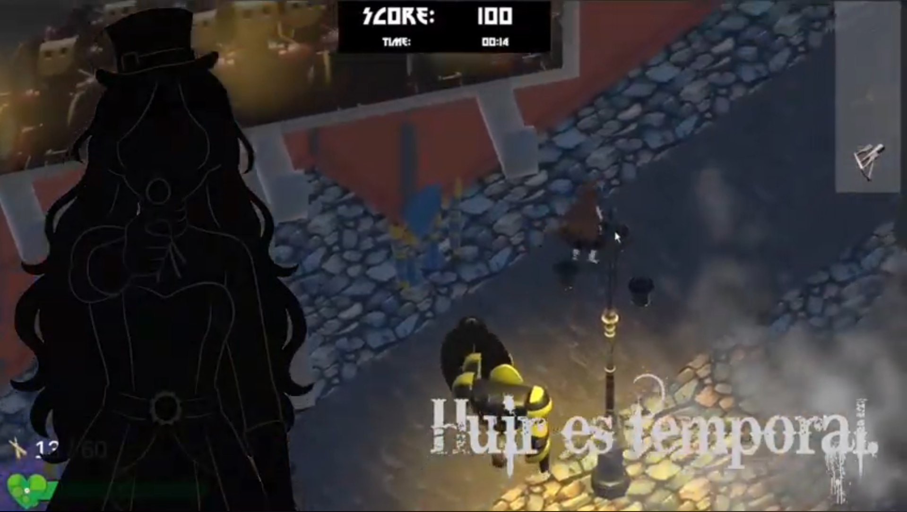
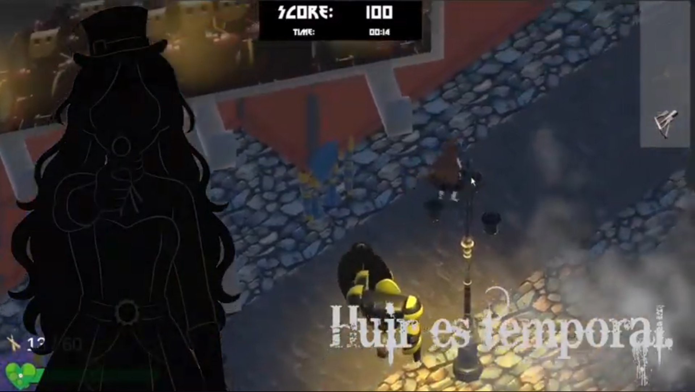
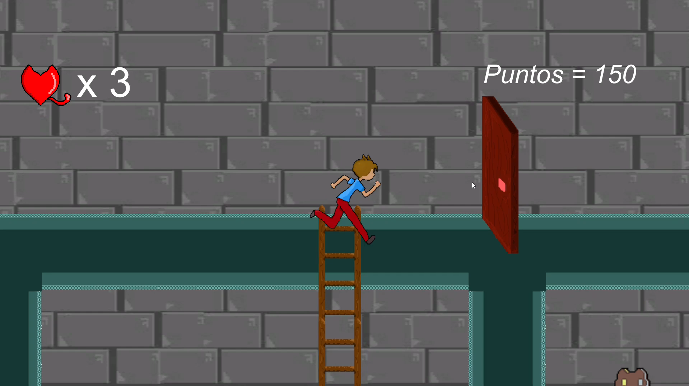
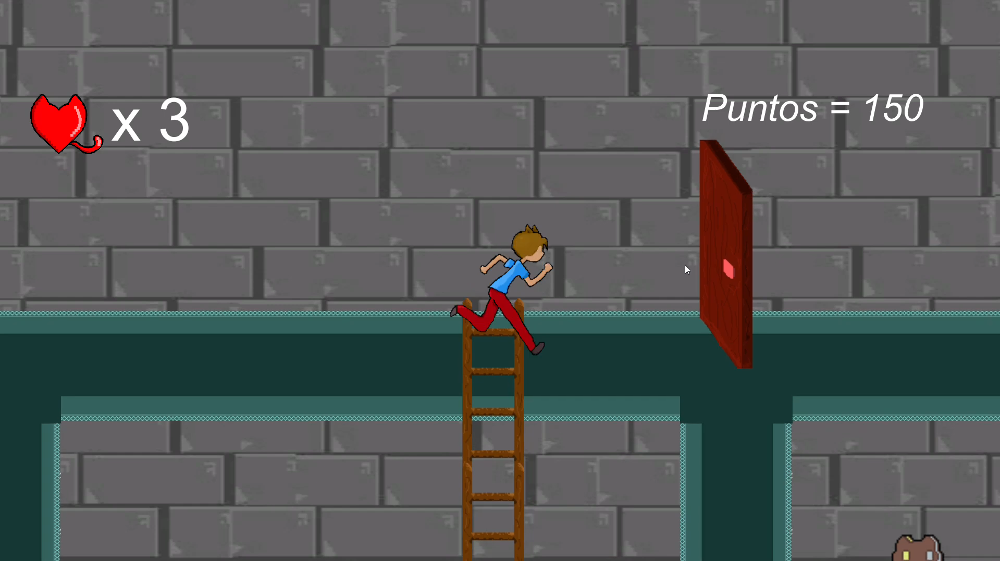

Chrono Defiance: Last Stand
Chrono Defiance: Last Stand tomas el rol de una inventora de maquinas que han se han vuelto en contra de la humanidad. Sobrevive lo más que puedas
que los robots no te quiten tu tiempo de vida. Un juego estilo supervivencia de oleadas con vista aerea y de exploración para conseguir el radio y pedir ayuda.
Mi aporte en este proyecto fue el diseño del nivel principal tipo mundo abierto, toda la narrativa y el worldbuiling.
Frelse TD
Frelse TD es un juego tipo tower defense donde tomas el rol de un oficial que después de haber sido herido en combate,
te han encomendado la misión de defender la última reserva de recursos de tu nación. Pero es dificil, hay que tomar decisiones
muy dificiles que afectaran el desarrollo de la partida .
Mi trabajo constó en darle la identidad al juego, crear la historia y narrativa de toda la guerra, los niveles y
su construcción fueron gran parte del trabajo, por ultimo el balance de las torres, los enemigos y de la economía del juego.

Juanito Alimaña
Un juego para celulares que busca reinterpretar la historia de "Juanito Alimaña", un personaje de una
canción latinoamericana pero en formato de videojuego plataformero en 2D. Donde el movimiento de los enemigos y conseguir
distintas armas para avanzar en los niveles es la mecánica principal.
Utilizando elementos de la canción y de su cultura se construyo una narrativa novedosa y divertida.
En este proyecto mi mayor aporte fue la búsqueda de como mejorar la experiencia de los jugadores
utilizando mis conocimientos en incluir una narrativa llamativa y un diseño de niveles que incentiva la exploración.

Spinning for liberty
Un juego estilo puzzle estilo clasico con una mecánica principal, que al disparar todos los enemigos dispararán tambien,
observa el entorno y a tus enemigos para saber cual es el mejor momento para disparar evitando que te destruyas a ti mismo en el proceso.
Este videojuego fue planeado para ser construido en poco tiempo y con unas necesidades especificas para desarrollarlo,
considerando las limitaciones de diseño mi trabajo principal fue crear una mecánica funcional y divertida, luego fue
crear niveles que le dieran un sentido a la mecánica ya construida.
 

Holly Meow
Holly meow es un juego estilo plataformas 2D donde fue la primeras experiencias y practicas como desarrollador de
videojuegos, en el tomas el rol de un hombre que tiene la capacidad de transformarse en un felino que habiendo
sido encerrado en una iglesia debe utilizar sus capacidades como humano y sus poderes felinos para escapar de ahí
Este fue mi primer proyecto como universitario, el cual recibio una conmemoración por su originalidad y buen trabajo
a pesar de haber sido el equipo más pequeño que había, premiando la originalidad de la mecánica principal a comparación
de los demás juegos. Mi trabajo principal fue pensar y planear todas las mecánicas y capacidades que tendrían cada
una de las formas del personaje, junto a diseñar los niveles que dieran rienda a que el jugador viviera una buena experiencia.